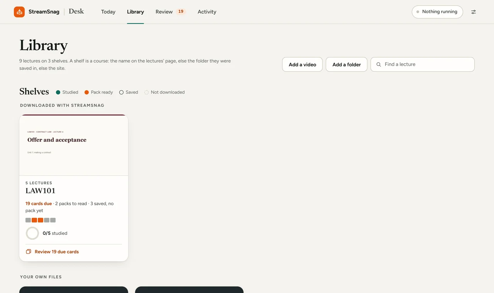
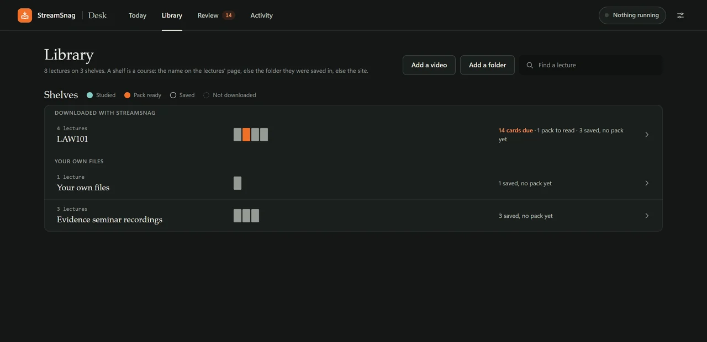
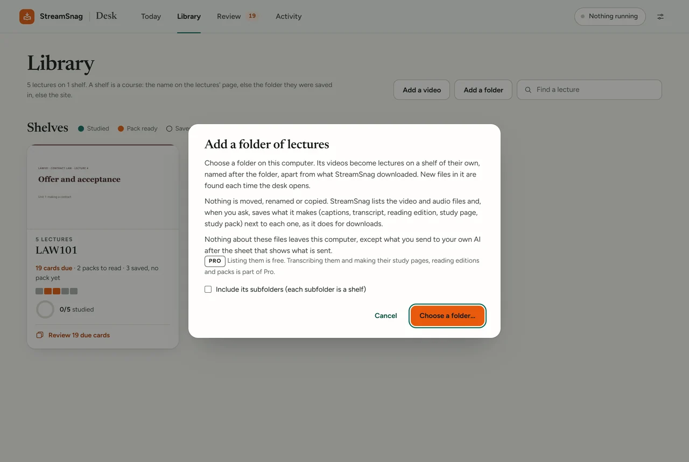
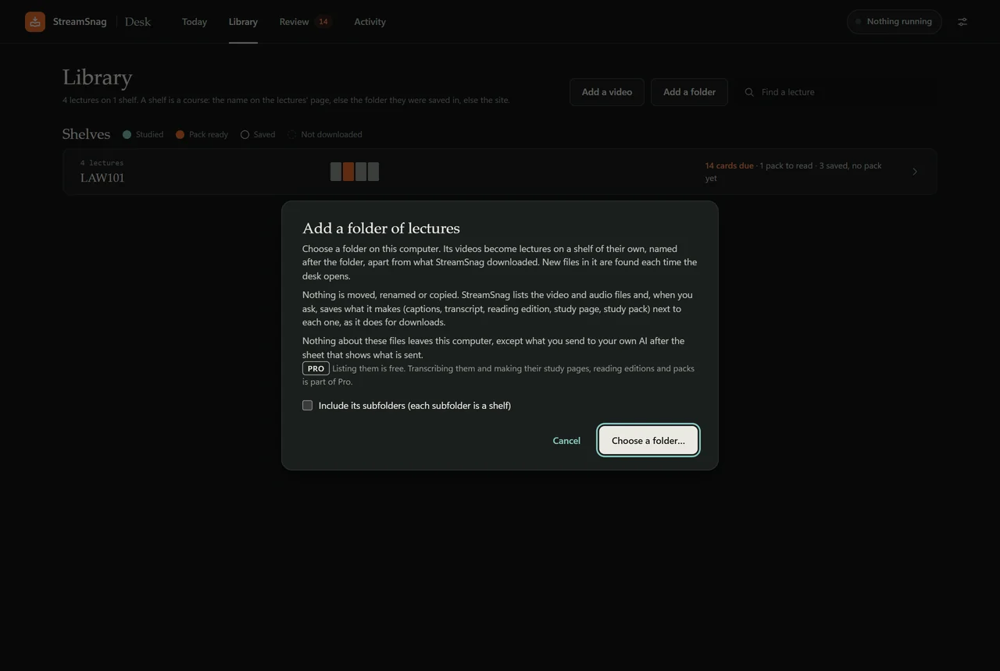

StreamSnagGuidesYour own videos
How to study from lecture videos you already have
At the end a recording you already had, from a course, a conference or your own phone, sits in your Library with a transcript, a reading edition, a study page and, if you want one, a study pack.
StreamSnag's study tools are not only for what it downloaded. A lecture you saved years ago, a recording your school handed out as a file, or a talk you recorded yourself can go into the same Library and get the same treatment. Nothing is moved, renamed or copied: StreamSnag lists the files where they are, and saves what it makes next to each one.
What you need
- StreamSnag Pro. Your first lecture is free, start to finish, so you can try this on one file.
- The helper program. It is what opens your computer's file picker and reads the files you choose. Windows for now. Open Settings, Local helper, to set it up.
- A video or audio file. MP4, MKV, WebM, MOV and the other common kinds, or sound only: M4A, MP3, WAV, FLAC and others.
Add your videos and study from them
Open the Library
Open the study desk from the StreamSnag popup (or press Alt+Shift+S) and go to Library. You will see Add a video and Add a folder at the top.


Add one video, or a whole folder
Add a video puts one file on a shelf called Your own files. Add a folder turns every video in that folder into a lecture, on a shelf named after the folder. Tick Include its subfolders and each subfolder becomes a shelf of its own. New files in a folder you added are found each time the desk opens.


Transcribe it on this computer
If a captions file with the same name sits next to the video (a .vtt or .srt), it is used. Otherwise press Transcribe on the lecture. Speech-to-text runs on your machine, so the sound is not uploaded and no minutes are counted.
Make the reading edition and the study page
Reading edition turns the lecture into an article you can read instead of watching. Study page puts the video, the slides and the transcript in step. For the slides, keep the deck next to the video with the same name, for example Lecture 6.mp4 and Lecture 6.pdf (or .pptx). Both are made on your computer.
Make a study pack, if you want one
Make pack writes a study guide, a practice quiz and flashcards with the AI account you chose in Settings. Before anything is sent you are shown what goes: the transcript and the text of the slides, never the video, the sound or pictures of slides.
What stays on your computer
In the extension's own words: nothing about these files leaves this computer, except what you send to your own AI after the sheet that shows what is sent. The helper can only read the files and folders you added; a request for anything else is refused. To take a folder off the desk, open its shelf and press Stop listing. The files stay where they are; only the list is removed.
Good to know: honest limits
- The helper is Windows only for now. A Mac helper comes later.
- Local speech-to-text is good, not perfect. It can misspell unusual drug and technical names. Check a term against the slides before you rely on it.
- Having the file does not settle the rights. Whether you may keep and study from a recording is up to whoever made it and your course's rules.
Questions
Does StreamSnag move or rename my files?
No. It lists the video and audio files where they are. What it makes, such as the transcript or the study page, is saved next to each video, as it is for downloads.
Can I add a recording that has no slides?
Yes. The transcript, the reading edition and a study pack need only the recording. The study page is the one part that needs a slide deck.
Does this work without the helper?
No. A browser extension cannot open files on your computer by itself, so the helper does it, and only for what you chose.
Try it on one recording
Your first lecture is free, start to finish, including one of your own.
Get StreamSnag, free